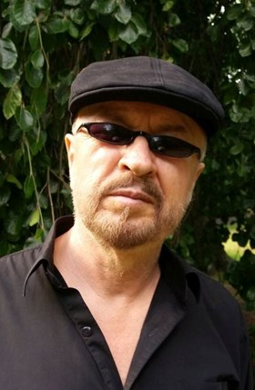

O Marianie Lorku
Marian Lorek to wszechstronny artysta, znany z tworzenia dzieł, które inspirują i zachwycają. Urodzony we Wrocławiu, od najmłodszych lat interesował się rysunkiem i szkicem. Malowaniem zajął się w wieku dwudziestu lat.
Na przestrzeni lat Marian uczestniczył w licznych indywidualnych wystawach w dużych polskich miastach, takich jak Warszawa, Kraków, Katowice, czy Wrocław, a także za granicą, w Niemczech (Wiesbaden). W rodzinnym Wrocławiu jego dzieła prezentowano w renomowanych galeriach, m.in. w Klubie Dziennikarzy, Klubie Literatury i Sztuki, Galerii Formaty, Galerii Agora i Galerii Entropia.
Jedno z jego dzieł zostało zakwalifikowane do finału Ogólnopolskiej Nagrody Sztuki Nieprofesjonalnej organizowanej przez Galerię BWA we Wrocławiu. Inne prace znalazły się w Top 100 najlepszych polskich dzieł sztuki według magazynu Art&Business. Kilkukrotnie jego obrazy były publikowane w ogólnopolskim magazynie artystycznym Agora.
W latach 2012-2015 Marian prowadził własną galerię sztuki w Sky Tower we Wrocławiu. Jego malarstwo charakteryzuje się surrealizmem z elementami hiperrealizmu i pop-artu. Najbardziej charakterystyczne są obrazy na welwetowych powierzchniach, które nadają im niezwykłą głębię i intensywność kolorów. Artysta określa ten styl jako Velvet Surrealism, który zyskał uznanie w świecie sztuki.
Ostatnio eksperymentuje z technikami mieszanymi, takimi jak akryl i olej na płótnie, stosując technikę laserunku, co nadaje obrazom wielowarstwowy efekt przypominający szklane pudełka. Marian opisuje te dzieła jako Luxferism Art. Współpracuje z wieloma galeriami, w tym Art Chimera Gallery, Galerią Piotra Uznanskiego oraz PS Gallery z Gdyni. Jego prace można także oglądać w stałej ekspozycji w restauracji Plastyczna we Wrocławiu.